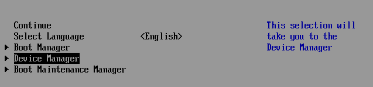
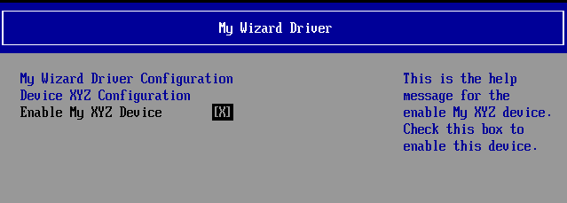
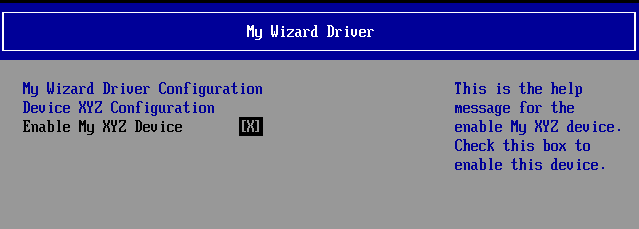

Lab 2. Updating HII to Save Data Settings
In this lab, you’ll learn how to modify and update your driver’s HII code to save the users settings into NVRAM. The UEFI Driver Wizard created the protocols for your driver to update and interface with the HII browser engine and database. The HII configuration access Protocol functions for MyWizardDriver are in the file C:\fw\edk2\MyWizardDriver\HiiConfigAccess.c. This next lab will install these protocols and update them to save the user data from the HII menus into NVRAM.
- Update the
MyWizardDriver.cfile
Your driver will need to keep track of the consumed protocols in it’s own data structure so it will need to declare local pointers to these and then store them in its own private context data structure. - Add the following local variable declarations in the function
MyWizardDriverDriverEntryPointEntry Point (as shown below Approx. line 185 ):EFI_HII_STRING_PROTOCOL *HiiString; EFI_FORM_BROWSER2_PROTOCOL *FormBrowser2; EFI_HII_CONFIG_ROUTING_PROTOCOL *HiiConfigRouting; - Add the following code to locate and store consumed protocols before the
// Publish sample Fromset and config accesscomment (as shown below Approx. line 227):
The reason is to Locate the Hii Database, Hii String, Hii Form browser and config routing protocols and store their pointers into the Private context data structure for your driver to access.
//Begin code
//
// Locate Hii Database protocol
//
Status = gBS->LocateProtocol (&gEfiHiiDatabaseProtocolGuid, NULL, (VOID **) &HiiDatabase);
if (EFI_ERROR (Status)) {
return Status;
}
PrivateData->HiiDatabase = HiiDatabase;
//
// Locate HiiString protocol
//
Status = gBS->LocateProtocol (&gEfiHiiStringProtocolGuid, NULL, (VOID **) &HiiString);
if (EFI_ERROR (Status)) {
return Status;
}
PrivateData->HiiString = HiiString;
//
// Locate Formbrowser2 protocol
//
Status = gBS->LocateProtocol (&gEfiFormBrowser2ProtocolGuid, NULL, (VOID **) &FormBrowser2);
if (EFI_ERROR (Status)) {
return Status;
}
PrivateData->FormBrowser2 = FormBrowser2;
//
// Locate ConfigRouting protocol
//
Status = gBS->LocateProtocol (&gEfiHiiConfigRoutingProtocolGuid, NULL, (VOID **) &HiiConfigRouting);
if (EFI_ERROR (Status)) {
return Status;
}
PrivateData->HiiConfigRouting = HiiConfigRouting;
//End code
4). Since the Hii Database Protocol was located earlier in the code with the previous code insertion and is no longer necessary, comment out the old OpenProtocol code with the “//” (approx. lines 289-298, as shown below) and add the comment "//" Done above
Make sure not to comment out the second “if (!EFI_ERROR (Status)) {”
Note: The earlier LocateProtocol code already found the pointer to the Hii Database protocol and stored it to the local pointer variable HiiDatabase.
When we added the driver-consumed protocols, we searched via LocateProtocol for the Hii Database pointer function. Since we did it above we’re now commenting out this code.
5). Comment out the matching “}” with “//” to the if statement (as shown below at approx. line 310):
6). Save MyWizardDriver.c
7). Open C:\fw\edk2\MyWizardDriver\HiiConfigAccess.c.
The Driver Wizard only made dummy functions for the extract, route and callback functions. In order to save the Data passed into the forms from the Hii Browser engine, you will need to port these functions to be functional.
8). Add the following extern statements for the form GUID and the NVRam variable (as shown below) these are global to the driver module only hence the beginning lower case “m” is the standard for a global for a module :
extern EFI_GUID mMyWizardDriverFormSetGuid;
extern CHAR16 mIfrVariableName[];
9). Locate MyWizardDriverHiiConfigAccessExtractConfig and replace line 108, “return EFI_NOT_FOUND”, with the following code spread over Next pages:
//Begin code
EFI_STATUS Status;
UINTN BufferSize;
MYWIZARDDRIVER_DEV *PrivateData;
EFI_HII_CONFIG_ROUTING_PROTOCOL *HiiConfigRouting;
EFI_STRING ConfigRequest;
EFI_STRING ConfigRequestHdr;
UINTN Size;
BOOLEAN AllocatedRequest;
if (Progress == NULL || Results == NULL) {
return EFI_INVALID_PARAMETER;
}
//
// Initialize the local variables.
//
ConfigRequestHdr = NULL;
ConfigRequest = NULL;
Size = 0;
*Progress = Request;
AllocatedRequest = FALSE;
PrivateData = MYWIZARDDRIVER_DEV_FROM_THIS (This);
HiiConfigRouting = PrivateData->HiiConfigRouting;
//
// Get Buffer Storage data from EFI variable.
// Try to get the current setting from variable.
//
BufferSize = sizeof (MYWIZARDDRIVER_CONFIGURATION);
Status = gRT->GetVariable (
mIfrVariableName,
&mMyWizardDriverFormSetGuid,
NULL,
&BufferSize,
&PrivateData->Configuration
);
if (EFI_ERROR (Status)) {
return EFI_NOT_FOUND;
}
if (Request == NULL) {
DEBUG ((DEBUG_INFO, "\n:: Inside of Extract Config and Request == Null "));
} else {
ConfigRequest = Request;
}
//
// Convert buffer data to <ConfigResp> by helper function BlockToConfig()
//
Status = HiiConfigRouting->BlockToConfig (
HiiConfigRouting,
ConfigRequest,
(UINT8 *) &PrivateData->Configuration,
BufferSize,
Results,
Progress
);
//
// Free the allocated config request string.
//
if (AllocatedRequest) {
FreePool (ConfigRequest);
}
//
// Set Progress string to the original request string.
//
if (Request == NULL) {
*Progress = NULL;
} else if (StrStr (Request, L"OFFSET") == NULL) {
*Progress = Request + StrLen (Request);
}
return Status;
// End code
10). Now locate MyWizardDriverHiiConfigAccessRouteConfig and replace line at approx. 228, with “return EFI_NOT_FOUND”, with the following code:
//Begin code
EFI_STATUS Status;
UINTN BufferSize;
MYWIZARDDRIVER_DEV *PrivateData;
EFI_HII_CONFIG_ROUTING_PROTOCOL *HiiConfigRouting;
if (Configuration == NULL || Progress == NULL) {
return EFI_INVALID_PARAMETER;
}
PrivateData = MYWIZARDDRIVER_DEV_FROM_THIS (This);
HiiConfigRouting = PrivateData->HiiConfigRouting;
*Progress = Configuration;
//
// Get Buffer Storage data from EFI variable
//
BufferSize = sizeof (MYWIZARDDRIVER_CONFIGURATION);
Status = gRT->GetVariable (
mIfrVariableName,
&mMyWizardDriverFormSetGuid,
NULL,
&BufferSize,
&PrivateData->Configuration
);
if (EFI_ERROR (Status)) {
return Status;
}
//
// Convert <ConfigResp> to buffer data by helper function ConfigToBlock()
//
BufferSize = sizeof (MYWIZARDDRIVER_CONFIGURATION);
Status = HiiConfigRouting->ConfigToBlock (
HiiConfigRouting,
Configuration,
(UINT8 *) &PrivateData->Configuration,
&BufferSize,
Progress
);
if (EFI_ERROR (Status)) {
return Status;
}
//
// Store Buffer Storage back to EFI variable
//
Status = gRT->SetVariable(
mIfrVariableName,
&mMyWizardDriverFormSetGuid,
EFI_VARIABLE_NON_VOLATILE | EFI_VARIABLE_BOOTSERVICE_ACCESS,
sizeof (MYWIZARDDRIVER_CONFIGURATION),
&PrivateData->Configuration
);
DEBUG ((DEBUG_INFO, "\n:: ROUTE CONFIG Saving the configuration to NVRAM \n"));
return Status;
//return EFI_NOT_FOUND;
//end code
11). Lastly, locate MyWizardDriverHiiConfigAccessCallback and replace at approx.** line 326, “return EFI_UNSUPPORTED**;”, with the following code:
//Begin code
MYWIZARDDRIVER_DEV *PrivateData;
EFI_STATUS Status;
EFI_FORM_ID FormId;
DEBUG ((DEBUG_INFO, "\n:: START Call back ,Question ID=0x%08x Type=0x%04x Action=0x%04x", QuestionId, Type, Action));
if (((Value == NULL) && (Action != EFI_BROWSER_ACTION_FORM_OPEN) && (Action != EFI_BROWSER_ACTION_FORM_CLOSE))||
(ActionRequest == NULL)) {
return EFI_INVALID_PARAMETER;
}
FormId = 0;
Status = EFI_SUCCESS;
PrivateData = MYWIZARDDRIVER_DEV_FROM_THIS (This);
return Status;
//end code
12). Save HiiConfigAccess.c
Build and test MyWizardDriver
- Open the Visual Studio Command Prompt
- Type build
- Type build run
- At the UEFI Shell prompt,type fs0:
- Type Load MyWizardDriver.efi
- Press “Enter”

- Type exit
- Now at the setup front page menu, select “Device Manager” 
- Press “Enter” to enter “Device Manager”
- Inside the Device Manager menu press the down to “My Wizard Driver Sample Formset”** Press "Enter"
 Press "Enter"

Note: Once you hit “Enter”, notice that your form is now displayed with a choice to enable your Device. Also notice the titles and help strings that are in the .UNI file you edited.
Press "Enter"

Note: Once you hit “Enter”, notice that your form is now displayed with a choice to enable your Device. Also notice the titles and help strings that are in the .UNI file you edited. - Test by Press the space bar to Enable and Disable the “Enable My XYZ Device” to change its value from:
[X]to[ ]
Note: Notice the “Configuration changed” message at the menu bottom. - Press “F10”
- Press “Escape” to exit
- Press “Escape” to exit the “Device Manager” Page
- Press Up Arrow to “Continue”

- Press “Enter”
- At the Shell Prompt type
Shell> dmpstore -all
Notice that enable is selected and saved in NVRam as the value of 0x00: Because our data structure inMyWizardDriverNVDataStruc.his stored in NVRAM with the variable nameMWD_IfrNVDataof typeMYWIZARDDRIVER_CONFIGURATION, we can see the changes from our menu accessing through our HII forms.
Notice that the enable/disable byte is the last byte in data structureMWD_IfrNVData.MyWizardDriverChooseToEnablewhere00 == disableand01 == enable. - Type Reset to return to the Visual Studio Command Prompt

For any build issues copy the solution files from C:\Fw\LabSolutions\LessonE.2
NOTE: Del Directory C:\fw\edk2\Build\NT32IA32\DEBUG_VS2010x86\IA32\MyWizardDriver before the Build command to build the MyWizardDriver Clean